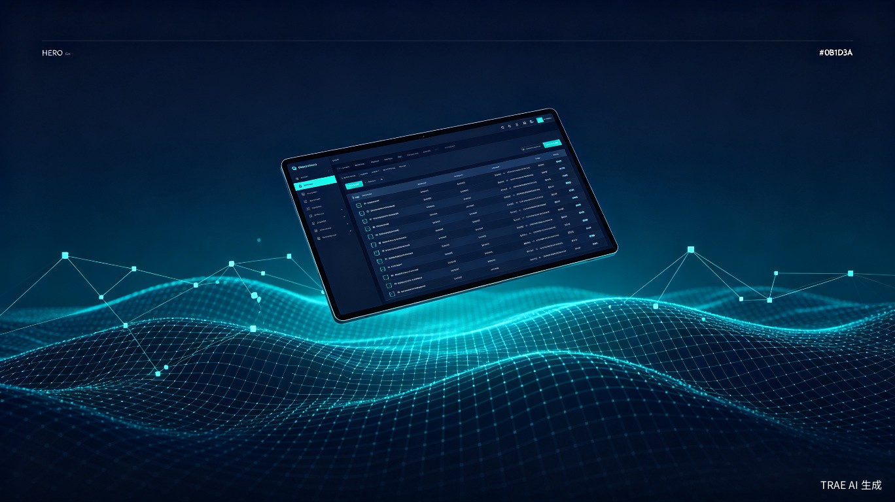
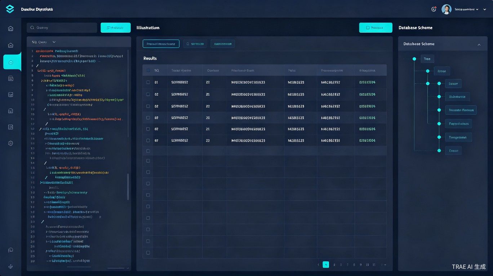
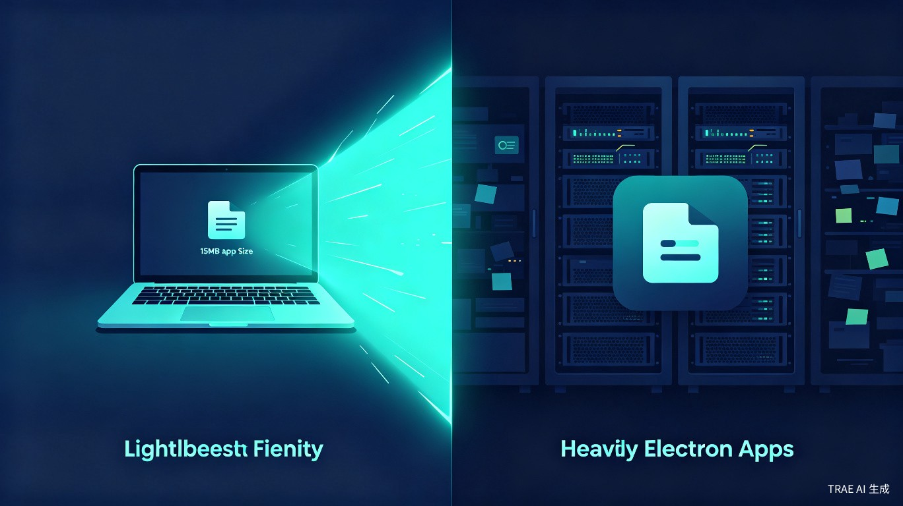
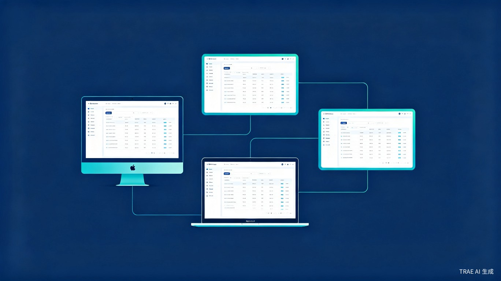

功能全面的工具往往体积臃肿、资源占用高或价格昂贵，而轻量简洁的工具又往往功能受限或平台支持不足。
基于 Java / Eclipse 构建的工具内存占用偏高，启动缓慢，处理大数据时容易卡顿甚至内存溢出，影响开发效率。
功能强大且轻量的商业软件授权价格高昂，对个人开发者、学生和小型团队构成较大的经济压力。
部分非 Java 开发的开源免费轻量工具存在跨平台支持不足的问题，无法在不同操作系统间无缝切换。
现有的开源免费工具在功能完整度、用户体验和数据库类型支持上往往存在明显短板。
一款基于 Tauri 框架开发的跨平台桌面数据库管理工具，支持 Windows、macOS、Linux 三大操作系统。

Database Ocean 提供直观的图形化界面，让数据库操作变得简单高效。无论是编写 SQL 查询、浏览数据表，还是管理数据库结构，都能一气呵成。

基于 Tauri 框架构建，打包体积控制在 15–20MB 以内，内存占用仅为传统 Electron 应用的十分之一。不再为电脑增加一个 Chromium。

一套代码，三个平台。无论你在 Windows、macOS 还是 Linux 上工作，都能获得完全一致的操作体验和界面表现。
精准定位核心用户群体，解决他们在数据库学习与工作中的实际痛点。
课堂学习与课后练习中的数据库实验操作，需要轻量、免费且易上手的工具来完成课程作业和项目实践。
独立开发项目中需要管理多种数据库，追求高效、免费且不占资源的开发工具。
创业初期预算有限，需要功能完备但零成本的数据库管理方案，支持快速迭代和多环境部署。
在多数据库环境下工作，需要统一的工具来管理 MySQL、PostgreSQL、SQLite 等多种数据源。
用数据说话，直观展示 Database Ocean 在体积、内存和综合表现上的优势。
全面比较各工具在关键维度上的表现，帮助用户做出明智选择。
| 特性 | Database Ocean | DBeaver | Navicat | DataGrip | TablePlus |
|---|---|---|---|---|---|
| 安装包大小 | ~18 MB | ~180 MB | ~85 MB | ~350 MB | ~65 MB |
| 内存占用 | ~45 MB | ~380 MB | ~120 MB | ~520 MB | ~85 MB |
| 开源免费 | ✓ | ✓ 社区版 | ✗ 商业软件 | ✗ 付费订阅 | ✗ 付费软件 |
| Windows 支持 | ✓ | ✓ | ✓ | ✓ | ✓ |
| macOS 支持 | ✓ | ✓ | ✓ | ✓ | ✓ |
| Linux 支持 | ✓ | ✓ | ✓ | ✓ | ✗ 有限 |
| MySQL 支持 | ✓ | ✓ | ✓ | ✓ | ✓ |
| PostgreSQL 支持 | ✓ | ✓ | ✓ | ✓ | ✓ |
| SQLite 支持 | ✓ | ✓ | ✓ | ✓ | ✓ |
| SQL 编辑器 | ✓ 智能补全 | ✓ 高级 | ✓ 高级 | ✓ 顶级 | ✓ 基础 |
| 可视化设计器 | 开发中 | ✓ | ✓ | ✓ | ✗ |
| 数据导入/导出 | ✓ | ✓ | ✓ | ✓ | ✓ |
基于现代技术栈构建，兼顾性能、安全与开发效率。
Rust 编写的轻量级桌面应用框架
前端 UI 组件化开发
高性能后端与系统调用
类型安全的代码开发
异步 Rust 数据库连接库
极速前端构建工具
从 MVP 到完整功能集的渐进式开发计划。
完成 Tauri + React 项目脚手架，建立基础 UI 组件库，实现数据库连接管理核心模块。
实现语法高亮、自动补全的 SQL 编辑器，支持执行查询并展示结果表格。
扩展支持 MySQL、PostgreSQL、SQLite，实现统一的数据库驱动抽象层。
添加数据表关系图、ER 图可视化，支持 CSV / JSON / SQL 格式的导入导出功能。
开放插件 API，支持自定义扩展；添加数据库迁移、版本控制等高级 DevOps 功能。
我们不是在做一个"又一个数据库工具"，而是在重新定义轻量级数据库管理的标准。
"让数据库管理回归本质 — 轻量、高效、无障碍。不需要为了一次查询等待数秒启动，不需要为了管理数据库购买昂贵的授权，不需要在不同平台间切换时重新学习操作方式。"
基于 Rust + Tauri 的极致性能，秒级启动、毫秒级响应，让每一次数据库操作都如行云流水。
一套代码覆盖三大桌面系统，无论你在哪个平台工作，体验始终如一。
采用 MIT 开源协议，代码完全透明，社区驱动发展，永久免费使用。